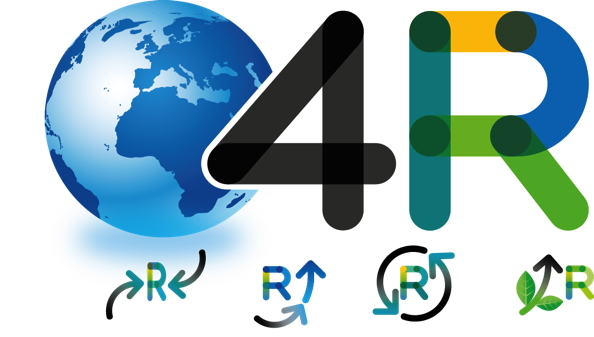

¿Qué es el reciclaje?
El reciclaje es un proceso donde las materias primas que componen los materiales que usamos en la vida diaria como el papel, vidrio, aluminio, plástico, etc., una vez terminados su ciclo de vida útil, se transforman de nuevo en nuevos materiales.
Ventajas de reciclar:
El reciclaje no sólo beneficia al medio ambiente sino que también es una buena opción para la economía de un país o región, generando empleos verdes. Según el informe de la fundación Amigos de la Tierra.
Reduce la necesidad de los vertederos y la incineración.
Ahorra energía y evita la contaminación causada por la extracción y procesamiento de materiales primas.
Disminuye las emisiones de gases de invernadero que contribuyen al cambio climatológico global.
Conserva los recursos naturales como la madera, el agua y los minerales.
Ayuda a sostener el medioambiente para generaciones futuras.
LA REGLA DE “LAS 4R”:
Reducir
Evitar el sobre envasado. Elegir siempre productos con la menor cantidad de embalajes innecesarios y los que utilicen materiales reciclados.
Reducir los productos de “usar y tirar”, como el papel aluminio, las bandejas de plástico, los envases tetrabrik….
Reducir la utilización de bolsas de plástico en las compras; llevar siempre una de tela o un carrito de compra.
Impulsar los procesos de producción limpia. Por ejemplo: reutilizando el papel de regalo.
Reducir el uso de plástico en envases, embalajes, juguetes, etc.
Reutilizar
Utilizar envases de vidrio, es 100% reciclable sin perder su calidad. Además, no se necesitan químicos para su elaboración.
Al usar el papel para escribir o imprimir, aprovechar las dos caras. También es posible fabricar pequeños blocks de notas con papel sobrante.
Utilizar filtros de café no descartables que pueden ser lavados y reutilizados.
Reemplazar
Comprar envases de vidrio en vez de plástico o latas.
Elegir otras alternativas a juguetes que funcionan con pilas o que están hechos de plástico.
Utilizar pañuelos de tela en vez de pañuelos de papel.
Elegir cuadernos con tapas de cartón, en vez de plástico.
Reciclar
El reciclado de los materiales es el último paso antes del pretratamiento y la eliminación de los residuos. Reciclar significa utilizar un residuo para obtener un producto similar al originario.
El reciclado permite reintroducir los distintos materiales en los ciclos de la producción, ahorrando materias primas y disminuyendo el flujo de residuos que van a parar a los tratamientos de disposición final.
Para residuos de carácter orgánico: pueden ser “compostados” para ser usados como abono de uso domiciliario o rural.
Los cartones, el papel, los vidrios, los metales, pueden ser de utilidad para algunas empresas o cooperativas que los reciclan.

DIFERENTES TIPOS DE RECICLAJE
En la mayoría de las sociedades de todo el mundo se lleva a cabo diversos tipos de reciclajes.
PAPEL
El reciclaje del papel es considerado uno de los más importantes, entendido por el consumo de bosques que implica su producción.
Una familia media consume en papel lo equivalente a 6 árboles, si reciclamos ese papel, se salvan 3 árboles y más de 34 mil litros de agua y cuatro recibos de luz.
Al utilizar papel reciclado se talan menos árboles y se ahorra energía.
Las fases del proceso del reciclaje del papel son las siguientes:
Recolección:
recolección en zonas urbanas de papeles y cartones usados
Clasificación:
las empresas clasifican el papel y cartón recolectado; papeles blancos de escritura, cajas de cartón, papeles de color café para embalaje, etc.
Enfardado:
los papeles ya clasificados son prensados en fardos
Almacenamiento:
fardos guardados en empresas clasificadoras a la espera de ser enviados a empresas de papeles específicos.
Tratamiento:
se limpia el papel de impurezas pesadas, como metales, alambres, etc. y son enviadas a otras industrias para ser reprocesadas.
PLÁSTICO
Otro tipo de reciclaje es el plástico. El problema que trae consigo un residuo de plástico es que tarda aproximadamente 500 años en degradarse y representa un 7% del peso total de la basura doméstica. Una de las grandes dificultades que presenta el reciclaje de plásticos es la clasificación, pues existen más de cincuenta tipos de plásticos y muchos envases están hechos con más de uno.
A continuación el proceso de su reciclaje:
Recolección:
Se recolectan los residuos plásticos. Es muy importante la ayuda que pueda otorgar la comunidad al dejar separada la basura en las casas
Centro de reciclado:
los residuos se llevan al centro, donde son compactados en fardos y guardados no más de tres meses.
Clasificación:
se clasifica el plástico por tipo y color. Actualmente se han desarrollado tecnologías que permiten clasificarlos automáticamente, ahorrando la mano de obra.
VIDRIO
El reciclaje de vidrio es considerado uno de los más fáciles, pues las características del material resultan fácilmente recuperables. El vidrio de un envase puede ser reutilizado, creando uno exactamente igual al original.
Los pasos para llevar a cabo el proceso son:
Limpieza inicial y separación por colores
Rotura y trituración del vidrio:
Almacenamiento y transporte:
el vidrio roto es muy denso, por lo tanto se requieren de grandes contenedores para su almacenamiento.
Procesamiento final:
se realiza un lavado final en la fábrica, donde se separa residuos como plásticos, etiquetas, etc. Se funde el vidrio en un horno a altas temperaturas hasta que caen en una máquina moldeadora para que tomen la forma de un recipiente. Los recipientes enfriados son despachados a las fábricas o embotelladoras de alguna marca en particular.